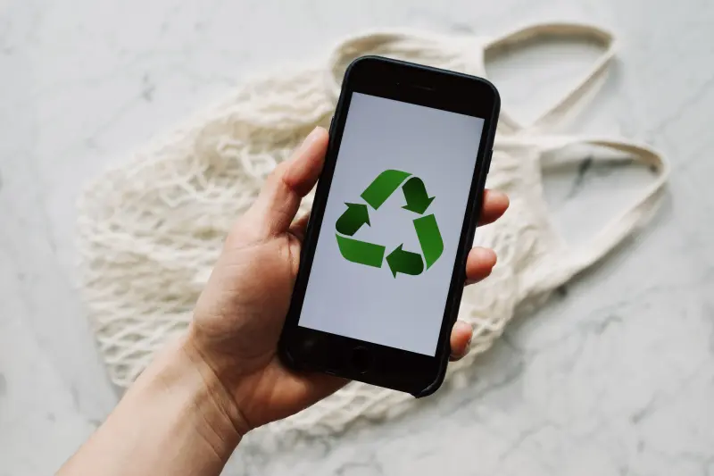
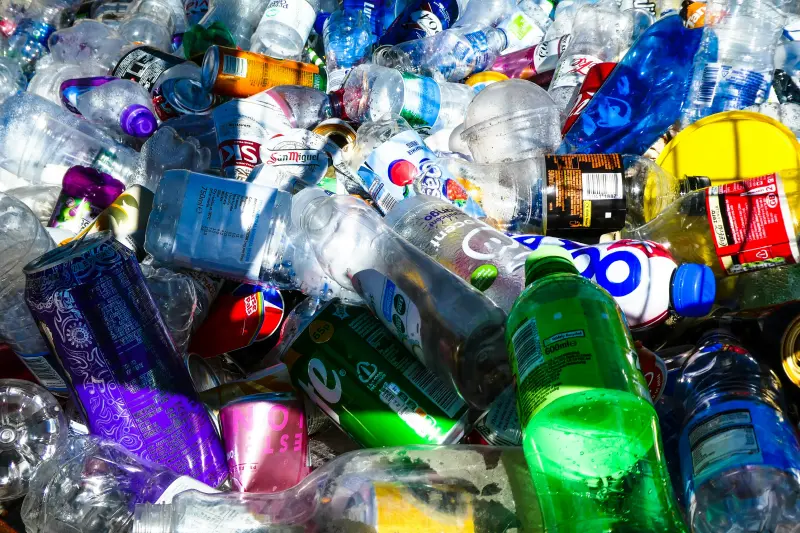
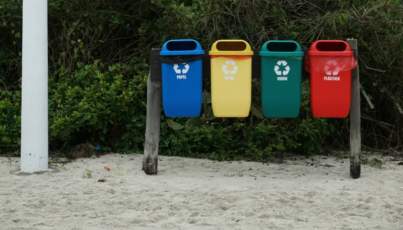
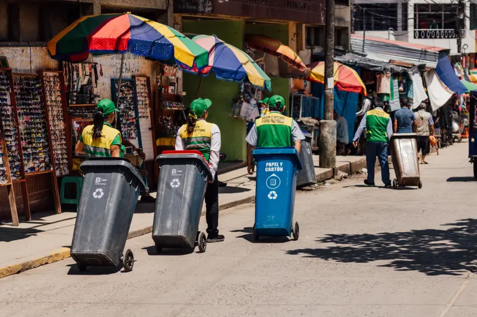
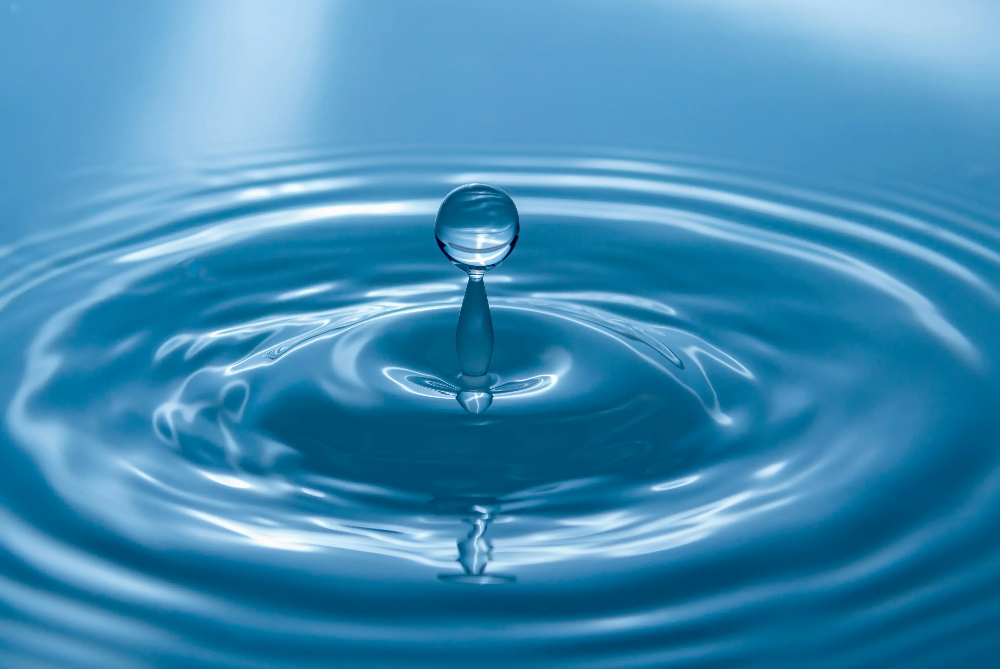
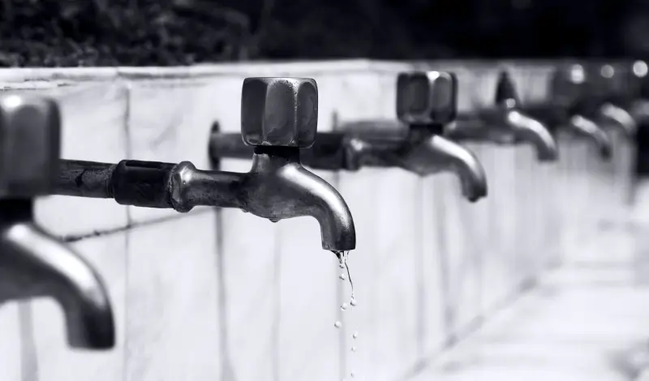
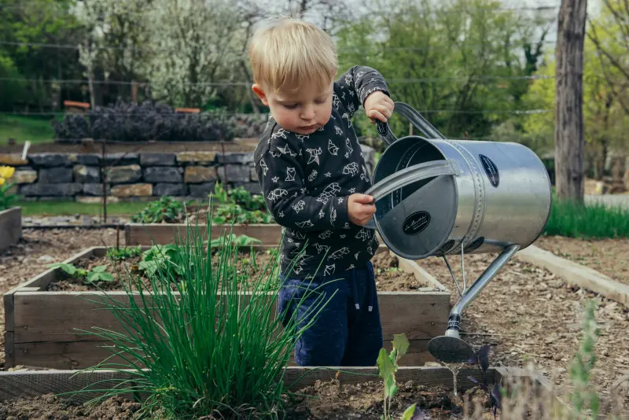

Explorando ideias e soluções para um planeta sustentável.
Nossos Artigos:
O que é sustentabilidade?
Quando ouvimos a palavra sustentabilidade, a primeira imagem que vem à mente costuma ser uma floresta fechada, um urso polar ou uma tartaruga no oceano. Embora o meio ambiente seja uma parte fundamental disso, a sustentabilidade é um conceito muito maior: trata-se da nossa capacidade de satisfazer as necessidades do presente sem comprometer a capacidade das futuras gerações de satisfazerem as suas.
Em termos práticos, significa usar os recursos do planeta (água, energia, matérias-primas) de forma inteligente, para que eles nunca acabem ou destruam o lugar onde vivemos.
O equilibro entre o homem e a natureza é fundamental na nossa sociedade.
Os 3 Pilares da Sustentabilidade (O Triplo Bottom Line)
Para entender como a sustentabilidade funciona de verdade, vale a pena conhecer o modelo dos três pilares. A sustentabilidade só acontece de fato quando três áreas caminham juntas:
Ambiental: Refere-se àconservação dos recursos naturais e da biodiversidade. Envolve reciclagem, uso de energias renováveis e redução de poluição.
Social: Diz respeito às pessoas. Trata de garantir direitos básicos, condições de trabalho dignas, igualdade, saúde e qualidade de vida para a comunidade.
Econômico: A conta precisa fechar! Um projeto ou empresa sustentável precisa gerar valor econômico, empregos e renda sem destruir o meio ambiente ou explorar as pessoas.
Se um projeto é bom para a natureza, mas financeiramente inviável ou prejudicial às pessoas, ele não é sustentável a longo prazo.
Por que a Tecnologia tem tudo a ver com isso?
Se você está navegando por este site, deve estar se perguntando: qual é o papel da Tecnologia da Informação nisso tudo?
A tecnologia é uma das maiores aliadas da sustentabilidade. Com softwares modernos, conseguimos otimizar rotas de transporte para gastar menos combustível, monitorar o consumo de energia de prédios inteligentes, automatizar processos para zerar o uso de papel e criar plataformas que conectam pessoas a causas socioambientais.
Cuidar do planeta não significa parar o progresso, mas sim usar a inteligência e a tecnologia para progredir do jeito certo.

A tecnologia atua como uma ferramenta essencial na otimização e conexão de processos sustentáveis no dia a dia.
Coleta Seletiva: Por que ela é importante?
Você já parou para pensar em para onde vai tudo o que você joga fora todos os dias? A coleta seletiva é o primeiro e mais importante passo para garantir que o nosso lixo não vá parar nos lugares errados. Trata-se do processo de separar e recolher os resíduos descartados pela população de acordo com a sua constituição (orgânico ou reciclável), permitindo que eles voltem para a cadeia produtiva.
Quando descartamos tudo junto, materiais valiosos se misturam a restos de alimentos e acabam inutilizados em aterros sanitários ou lixões. Separar o lixo em casa ou no trabalho é um gesto simples que transforma o que seria poluição em matéria-prima.

Resíduos plásticos e metálicos reunidos para triagem e destinação ao processo de reciclagem.
As Cores das Lixeiras: Guia Prático
Para facilitar a separação em locais públicos e empresas, existe um padrão internacional de cores para cada tipo de resíduo. Conhecer as principais ajuda a não errar na hora do descarte:
Amarelo: Metal (latas de alumínio, tampinhas, conservas).
Verde: Vidro (garrafas, frascos, potes).
Marrom: Resíduos orgânicos (restos de alimentos, cascas de frutas).
Cinza: Lixo não reciclável ou contaminado (papel higiênico, adesivos, espelhos).

Lixeiras de materiais recicláveis instaladas em ambiente litorâneo para incentivar o descarte correto.
O Processo de Reciclagem
A reciclagem é a transformação de um material usado em um produto novo. Depois que o lixo é separado na coleta seletiva, ele segue para cooperativas ou usinas de triagem, onde é preparado e vendido para indústrias recicladoras.
Por exemplo: uma garrafa PET descartada na lixeira vermelha é lavada, triturada e transformada em pequenos grãos de plástico. Esses grãos podem virar novas garrafas, embalagens e até fibras de tecido para roupas e estofados. Esse ciclo evita a extração de mais petróleo do planeta para fabricar plástico do zero.
Principais Benefícios da Coleta Seletiva
Adotar a coleta seletiva no dia a dia traz impactos positivos imediatos
Preservação do Meio Ambiente: Reduz a extração de recursos naturais (árvores, água, minérios) e a contaminação do solo e dos rios.
Economia de Energia e Água: Fabricar produtos a partir de matéria-prima reciclada consome muito menos recursos do que produzir a partir do zero.
Inclusão Social e Geração de Renda: Cria milhares de empregos em cooperativas e fortalece o trabalho dos catadores de materiais recicláveis.
Aumento da Vida Útil dos Aterros: Menos volume de lixo enviado para os aterros sanitários significa mais tempo de uso dessas estruturas urbanas.

Geração de empregos é um dos benefícios da reciclagem.
Como economizar água no dia a dia
A água é um dos recursos mais essenciais do planeta, mas muitas vezes a usamos como se ela fosse infinita. Pequenas mudanças de hábito dentro de casa podem economizar milhares de litros todos os meses, além de aliviar a conta no fim do mês.
Confira atitudes simples e práticas que fazem toda a diferença na preservação desse recurso valioso:

Cada gota representa um recurso essencial que deve ser utilizado de forma consciente.
Reduza o Tempo no Banho
O chuveiro é um dos maiores vilões do consumo de água em uma residência. Um banho de 15 minutos pode gastar mais de 130 litros de água.
Feche o registro: Ao se ensaboar e lavar o cabelo, desligue o chuveiro.
Estipule um limite: Tente reduzir o tempo de banho para cerca de 5 a 8 minutos.
Chuveiro elétrico vs. A gás: Se usar aquecimento a gás, aproveite a água fria que sai antes de esquentar para coletar em um balde e usar na limpeza.
Atenção às Torneiras e Vazamentos
Deixar a torneira aberta sem necessidade é um desperdício silencioso. Uma torneira aberta por 5 minutos gasta cerca de 80 litros de água.
Escovando os dentes e fazendo a barba: Mantenha a torneira fechada enquanto escova ou barbea, abrindo apenas para enxaguar.
Lavando a louça: Ensaboe todos os pratos e talheres primeiro com a torneira fechada e só abra na hora de enxaguar tudo de uma vez.
Cuidado com pinga-pinga: Uma torneira gotejando pode desperdiçar mais de 40 litros por dia. Mantenha as vedações em dia.

Pequenos vazamentos podem provocar um grande desperdício de água ao longo do tempo.
Mude o Hábito na Lavagem do Quintal e Calçada
Usar a mangueira como "vassoura" para empurrar folhas e poeira é uma das práticas que mais consomem água desnecessariamente. Em 15 minutos, uma mangueira ligada pode gastar cerca de 280 litros.
Use a vassoura: Varra a sujeira seca antes de pensar em jogar água.
Prefira o balde: Se precisar lavar a área externa ou o carro, troque a mangueira por um balde com pano ou escova. O consumo cai drasticamente.
Pratique a Reutilização de Água
Dar um segundo uso para a água que já foi utilizada é uma das formas mais eficientes de consumo consciente.
Água da máquina de lavar: A água do enxágue da máquina de lavar roupas contém sabão e é perfeita para lavar o quintal, a calçada ou o banheiro.
Captação de água da chuva: Coloque baldes ou cisternas simples debaixo das calhas em dias chuvosos. Essa água serve para regar plantas, lavar o chão ou limpar superfícies externas.

Reutilizar água para cuidar de hortas e jardins é uma atitude simples que contribui para o consumo consciente.